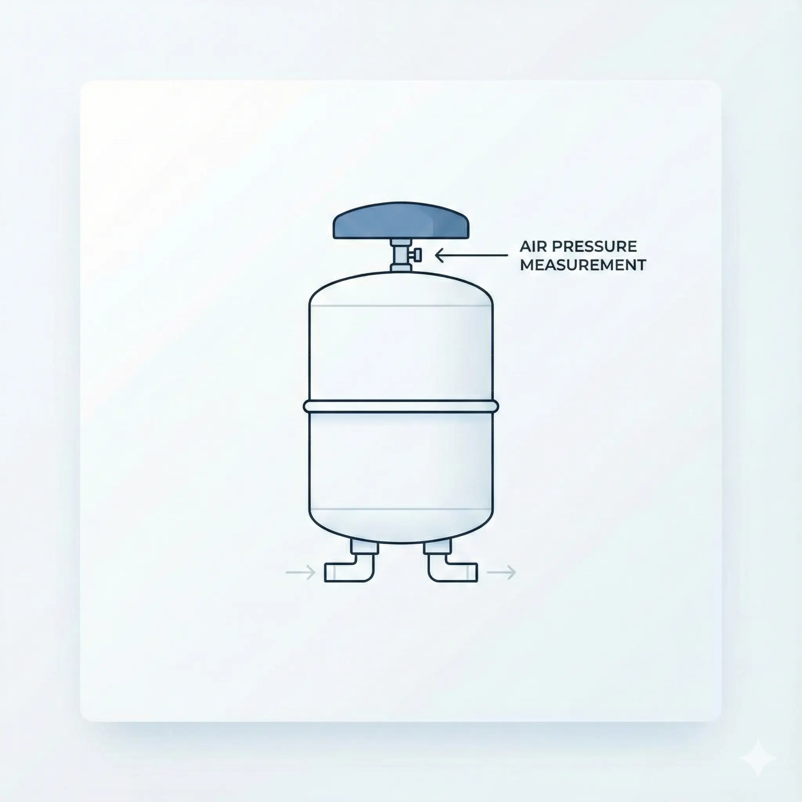

Зазвичай причина у забитих фільтрах попереднього очищення або низькому тиску в баку.
Симптоми:
- Тонка цівка води з крана
- Бак набирається довше 2 годин
- Помпа постійно працює (шумить)
Рішення (Кроки):
- Перевірте вхідний тиск води (має бути > 2.5 атм).
- Перекрийте бак (синій краник зверху). Якщо вода з крана взагалі перестала текти — забиті картриджі (1-2-3 ступені).
- Якщо картриджі нові, перевірте тиск повітря в порожньому баку (має бути 0.4–0.6 атм).
